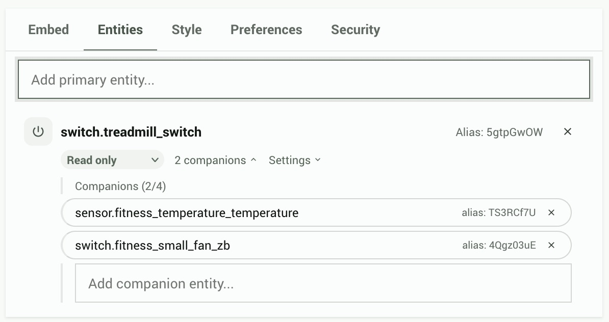

Widget reference
HTML attributes, embed modes, the JavaScript API, companion entities, and advanced card configuration.
Embed modes
There are three ways to put widget cards on a page. Pick whichever suits your environment.
Custom element mode
Uses <hrv-card> and <hrv-group> as native HTML custom elements.
<script src="harvest.min.js"></script>
<script>
HArvest.config({ haUrl: "https://myhome.example.com", token: "hwt_..." });
</script>
<hrv-card entity="light.bedroom_main"></hrv-card>
<!-- Group example -->
<hrv-group>
<hrv-card entity="light.living_room"></hrv-card>
<hrv-card entity="light.dining_room"></hrv-card>
</hrv-group>Data attribute mode
Uses plain <div> elements with data- attributes. Mostly useful in environments that sanitize custom HTML tags - some page builders, CMSes, or email templates won't allow unknown elements like <hrv-card>.
<script src="harvest.min.js"></script>
<div class="hrv-group" data-token="hwt_..." data-ha-url="https://myhome.example.com">
<div class="hrv-mount" data-entity="light.bedroom_main"></div>
</div>hrv-mount.js (bundled into harvest.min.js) scans the page on load for .hrv-mount and .hrv-group divs and mounts card elements inside them automatically. A MutationObserver handles elements added dynamically after page load.
Programmatic mode
Creates cards via JavaScript using HArvest.create(). Useful when you're building a dynamic UI and want to control exactly when and where cards appear - for example, responding to user interactions or building a dashboard from fetched data.
HArvest.config({ haUrl: "https://myhome.example.com", token: "hwt_..." });
const card = HArvest.create({
entity: "light.bedroom_main",
targetId: "my-container", // ID of the element to append into
});
// Or attach it yourself:
const card2 = HArvest.create({ entity: "sensor.outdoor_temp" });
document.getElementById("sidebar").appendChild(card2);Token configuration levels
The token and ha-url connection values can be set at three levels. Cards inherit from the nearest level where a value is set - card attributes override group attributes, which override the page-level defaults. You don't have to use all three levels.
| Level | How to set it | Applies to |
|---|---|---|
| Page | HArvest.config({ token, haUrl }) | All cards on the page that don't have a closer override |
| Group | token and ha-url on <hrv-group> | All cards inside that group element |
| Card | token and ha-url on <hrv-card> | That specific card only |
Resolution order: card attribute wins, then the nearest ancestor group, then HArvest.config(). A missing value after all three levels are checked causes the card to show a configuration error.
Page-level (one token for the whole page)
Call HArvest.config() once, put only the entity on each card. The wizard generates this pattern by default when all entities in the snippet belong to the same token.
<script>
HArvest.config({ haUrl: "https://myhome.example.com", token: "hwt_..." });
</script>
<hrv-card entity="light.bedroom_main"></hrv-card>
<hrv-card entity="sensor.outdoor_temp"></hrv-card>Group-level (multiple tokens on one page)
Use separate <hrv-group> elements when you have cards from different tokens on the same page. Each group carries its own connection settings and shares one WebSocket connection per token.
<hrv-group token="hwt_tokenA..." ha-url="https://myhome.example.com">
<hrv-card entity="light.living_room"></hrv-card>
<hrv-card entity="light.dining_room"></hrv-card>
</hrv-group>
<hrv-group token="hwt_tokenB..." ha-url="https://myhome.example.com">
<hrv-card entity="climate.main_thermostat"></hrv-card>
</hrv-group>Card-level (each card self-contained)
Put the connection details directly on each card. Useful when cards are dropped into different parts of a page independently - for example, through a CMS shortcode that renders one card at a time.
<hrv-card token="hwt_..." ha-url="https://myhome.example.com" entity="light.bedroom_main"></hrv-card>Cards sharing the same token and ha-url always share one WebSocket connection regardless of how the values are provided - so card-level configuration doesn't create extra connections compared to page-level.
hrv-card attributes
Only connection-identifying attributes belong on the HTML element. All display configuration (theme, graph settings, companion entities, animations) is managed server-side per entity in the panel and pushed to the widget over WebSocket.
light.bedroom_main, sensor.outdoor_temperature. Use this or alias - not both. If both are present, entity takes priority and a console warning is logged.dJ5x3Apd. Use this or entity - not both. Aliases let you avoid putting real entity IDs in your page source. The server resolves the alias to the real entity ID during auth.HArvest.config() or a parent <hrv-group> for this specific card. Rarely needed - usually set once at the page or group level.HArvest.config() or a parent group. e.g. https://myhome.duckdns.org.hrv-group attributes
<hrv-group> is a context provider that passes connection settings to all descendant <hrv-card> elements. It doesn't render anything itself.
HArvest.config().JavaScript API
The widget exposes a global HArvest object with several methods and properties.
HArvest.config(options)
Sets page-level defaults inherited by all <hrv-card> and <hrv-group> elements on the page. This call is optional - if you set token and ha-url directly on your group or card elements you don't need it. Merges with prior calls - later calls override earlier values for the same key. Connection values are read lazily at WebSocket connection time, so call order relative to element mounting is not a concern.
HArvest.config({
haUrl: "https://myhome.example.com", // HA external URL
token: "hwt_...", // default token for all cards
tokenSecret: "my-hmac-secret", // HMAC secret (if HMAC enabled)
colorScheme: "auto", // "auto" | "light" | "dark"
});| Option | Type | Notes |
|---|---|---|
haUrl | string | Page-level default HA URL. Inherited by cards/groups that don't set their own. |
token | string | Page-level default token ID. Inherited by cards/groups that don't set their own. |
tokenSecret | string | HMAC signing secret. Only needed when the token has HMAC authentication enabled. |
colorScheme | "auto" | "light" | "dark" | Page-level color scheme fallback. The token's server-side setting takes priority. |
HArvest.create(config)
Programmatically creates an HrvCard element and appends it to a target container. Returns the element instance.
const card = HArvest.create({
entity: "light.bedroom_main",
targetId: "my-container", // ID of the element to append into
// haUrl and token can be specified here or via HArvest.config()
});HArvest.getCard(entityId)
Returns the HrvCard instance currently registered for a given entity ID, or null if none exists. When multiple cards on the same page subscribe to the same entity, this returns the most recently registered one.
const card = HArvest.getCard("light.bedroom_main");
if (card) {
console.log(card.entityId, card.lastState);
}HArvest.registerRenderer(key, RendererClass)
Registers a custom renderer class for a given entity domain or device class. Overrides the built-in renderer globally for that key. Last call wins. See the Theming page for details.
HArvest.registerRenderer("light", MyCustomLightCard);
HArvest.registerRenderer("sensor.temperature", MyTempCard); // device class specificHArvest.renderers
An object exposing all built-in renderer classes so you can extend them:
// Available built-in renderers:
HArvest.renderers.BaseCard
HArvest.renderers.LightCard
HArvest.renderers.SwitchCard
HArvest.renderers.FanCard
HArvest.renderers.ClimateCard
HArvest.renderers.CoverCard
HArvest.renderers.MediaPlayerCard
HArvest.renderers.RemoteCard
HArvest.renderers.SensorTemperatureCard
HArvest.renderers.SensorHumidityCard
HArvest.renderers.SensorBatteryCard
HArvest.renderers.BinarySensorCard
HArvest.renderers.InputBooleanCard
HArvest.renderers.InputNumberCard
HArvest.renderers.InputSelectCard
HArvest.renderers.HarvestActionCard
HArvest.renderers.TimerCard
HArvest.renderers.GenericCard // Tier 2 fallbackHArvest.track.anyState(callback)
Registers a callback that fires whenever any entity's state changes on the page. Useful for logging, analytics, or driving custom page logic based on entity state.
HArvest.track.anyState((entityId, state, attributes) => {
console.log(`${entityId} changed to ${state}`);
});Companion entities
Companions are secondary entities displayed as small status indicators inside a primary card. For example, a motion sensor shown inside a light card, or a lock status shown alongside a cover card.
Companions are configured server-side in the panel (entity detail screen, Display settings, Companion entities). They don't need any HTML attribute on the card element - the server automatically subscribes the companion entities and delivers them alongside the primary entity's definition.

Companion eligibility
Not every entity type can be a companion. Eligible domains:
| Domain | Access in companion role |
|---|---|
| light | Toggle on/off |
| switch | Toggle on/off |
| input_boolean | Toggle on/off |
| binary_sensor | Read-only state |
| lock | Read-only state |
| cover | Read-only state/position |
| remote | Read-only power state |
Maximum 4 companions per card. Companions with "read" capability never trigger service calls regardless of the domain, even if the domain normally allows control.
Server-managed settings
Several card settings that used to be HTML attributes are now managed server-side per entity in the panel. They are delivered to the widget over WebSocket during authentication and update in real time when changed in the panel.
| Setting | Configured in panel | Notes |
|---|---|---|
| Graph type (line/bar/none) | Entity display settings | History graph for sensor entities |
| Graph hours | Entity display settings | Time window, 1-168 hours |
| Graph period | Entity display settings | Aggregation period in minutes |
| Animate fan icon | Entity display settings | Spinning fan when entity is on |
| Companion entities | Entity display settings | See above |
| Theme / CSS variables | Token appearance settings | Pushed on connect and on theme change |
| Language | Token display defaults | BCP 47 tag or "auto" |
| Accessibility mode | Token display defaults | "standard" or "enhanced" |
| On offline behavior | Token display defaults | "dim", "hide", "message", or "last-state" |
| On error behavior | Token display defaults | "dim", "hide", or "message" |
| Offline message text | Token display defaults | Custom text shown when entity is offline |
| Error message text | Token display defaults | Custom text shown on connection error |
Tracking state events
The HArvest.track.anyState() callback receives every state change for every entity on the page. For more targeted tracking, listen on a specific card instance:
// Wait for the card to be registered, then attach a listener
document.querySelector("hrv-card[entity='light.bedroom']")
.addEventListener("hrv-state-change", (event) => {
const { entityId, state, attributes } = event.detail;
console.log(entityId, state);
});Offline and error states
When a widget can't reach HA or an entity is unavailable, the card enters an offline or error state. The behavior is configurable per token:
| Setting | On offline behavior |
|---|---|
last-state (default) | Card shows the last known state, dimmed, with a stale indicator |
dim | Card dims but shows no explicit message |
hide | Card collapses to zero height |
message | Card shows the offline message text (configurable per token) |
The on-error setting (for WebSocket or auth errors, not entity-unavailable) follows the same options but without last-state.